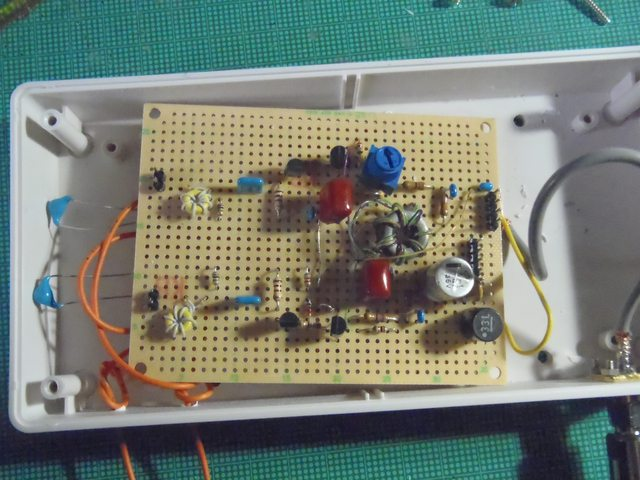

Sorry, under construction and Japanese only,Yet...
ループアンテナ、ΔLoop9の製作(2013-02-06)
もくじ
これは何か
どのようなものか
製作
ケースに組み込む
電子工作系もくじへ
全体目次へ
これは何か
遠隔地のラジオを聴くBCLの世界では、ループアンテナやプリアンプが使われて来ていました。しかし、ここにきて、差動増幅を使ってノイズキャンセルをする高感度ループアンテナが出てきました。そのヴァリエーションの一つが、影山敦久氏によるΔLoop9です。
元々は、手持ちの短波が入るラジカセの感度を何とか上げようと、ダメ元で作って見ることにしたのですが…
どのようなものか
室外に置いた一辺1mの正三角形のアンテナエレメントで電波を受信し、差動増幅で同相ノイズ（コモンモードノイズ）を排除して、同軸ケーブルで部屋に伝送して、ラジオで聴くものです。
しかも、非同調式の広帯域アンプで、未だ特性を試していませんが影山氏のHPでは150KHz〜40MHz辺りまでが対象のようです。
私の方で微調整していますが、大まかな製作は影山氏のページを見て下さい。ここでは、細かいTIPSのようなものを書いていきます。

回路図
製作
・部品について：
・(資源的に希少な上に故障時に短絡モードになる)タンタルコンデンサを使わずに、メタライズドフィルムコンデンサを使いました。積層セラミックでもいいでしょう。（但し50V以上推奨、35V必須)
・アンプ部については屋外に設置するので、電解コンデンサは105℃の長寿命品か125℃を使いましょう。千石電商でニチコンのBXシリーズ(150℃,2000時間)が売ってたので、これを使いました。
・アンプ部と電源部の接続は、SMAコネクタを介して1.5D-2Vで行います。防水的な問題から、ネジ止めするコネクタのほうがベターなので。
・エレメントからの入力コンデンサの100pは、耐圧（と後でSGとFGを分離する）の事を考えて、3KV品を使いました。入手困難なら2KVや普通の50Vでもいいでしょう。
・トランジスタ(2SC1906/1907)については廃止品（ディスコン）の為に入手が困難になっています。今生産してて使えそうなのは、秋月等で売ってる2SC3110辺りが妥当でしょうが、許容される電流が小さい上に表面実装品なので、抵抗の数値を計算しなおしたり実装を考えなおしたりしなければダメそう。なので、町田のサトー電気に未だ在庫があったので、こちらを使いました。(手抜き？)
まず、コイルを作って行きましょう。
L2とL3は黄色いコアに0.26ミリのジュンフロン線を7回通します。
T1については、まず、三色のジュンフロン線をよります。その上で、7回黒いコアに通します。で、一色を二次側にし、一次側は残り二色を使います。ここで、一次側のタップの取り方を相当悩みましたが、二本とも同じ側をトランジスタのコレクタにつなぎ、残りの片方の二色をつないでタップにすればいいようです。
基板の裏側の写真を撮っていませんでしたが、裏側の配線はサンハヤトの銅箔テープ等を使ってなるべく太くします。特に、グランドとシグナル系はなるべく太い銅箔ラインで配線していきます。
電源部で苦労しました。最初7810を使ってましたが、中々10Vが出ず、ACアダプター（トランス型)の電圧がそのまま出てる。で、配線チェックしても間違いがなく、おかしいな(；´Д｀)と悩んで、入力側に25Vのケミコンをつないでみたら、ポン！！と爆発しやがりました。ACアダプターが腐っていて、漏電してたようです(-_-#。
で、しょうがないから部品を入れ替えてLM317で約10V出すようにし、ACアダプターについても件のトランス型ではなく、秋月で買った24V1Aのスイッチング電源が余ってたのでそれを流用しています。近い内に15V位のスイッチング電源を買うつもりでいます。影山氏のページではスイッチング電源に対する不安が書かれていますが、最近のスイッチング電源は優秀なのでノイズは気にならないです。不安であれば、電源部のJ101の後ろにコモンモードチョークを噛ませれば大丈夫でしょう。
とりあえず、電源部ができたら、J103の電圧を測ります。10.4〜9.6Vの間ならOKでしょう。
これが上手く行ったら、同軸ケーブルでアンプ部と電源部を接続し、アンプ部の各チェックポイントの電圧を測定します。大体合ってればOK。
そして、仮に5m程度のビニール線をエレメント代わりにしてJ103とラジオの間もつなぎます。ショートを避けるために、仮のケースや台に入れてからやりましょう。
で、テスト…あんまし聞こえない？(´・д・｀)。
ビニール線を窓の外に出してためし直す。ガンガン入ってくるではないかヽ(゜∀゜)ノ
ケースに組み込む

今回は、防水の問題があるのでタカチのTWN9-4-17Wと言う難燃性プラスチックで出来たケースにアンプ部を入れました。
写真は動作チェック時の物なので、ケースにバナナ用の端子を付けますが、その前にアンテナ入力用の線と100pFを付けてしまいます。
更に、100pFのグランド側についても配線します。
こんな感じ。
基板上のコイルは、ホットメルトで固定します。
ここまでできたら、再度動作チェックします。ショートしてないかとか断線してないかとか。
さて、エレメントを作りましょう。13mm径の塩ビパイプやアンテナマスト、金具はホームセンターで売っています。塩ビパイプは1mにしないといけませんが、有償でカットしてくれるサービスが大抵のホームセンターにあるので、活用しましょう。
3本の塩ビパイプにビニール線を通します。その後、大体10〜20cm程度の長さを両端から出して、線をカットします。そして、バナナプラグをはんだづけし、線をインシュロックでバインドしていきます。
このエレメントをアンテナマストに取り付けます。これは結構難儀するかも。
更に、アンプ部を木ねじやタップビスと金具でマストに取り付けます。アンプ部の基板にネジが接触しないように慎重に位置決めして下さい
ここまでできたら、ネジを締めて、アンテナマストとエレメントを外に設置します。
その上でエレメントをアンプに接続し、アンプと電源部の間の同軸ケーブルを接続します。そして、ラジオと電源部も接続して電源を入れましょう。
影山氏のページにあるようにアンプ部を調整し、エレメントの向きについても調整します…聞こえますか？
聞こえました…今は、最近作ったDSPラジオをつないでいますが、短波と中波についてはこれで相当いいです。まさか、イランの国際放送まで聴けるとは思わなかった。相当な増幅度・感度のアンテナですね。
FMについては近所の局しか聞こえません…FM聴くときだけアンテナを別のものにする必要がありますね(；´Д｀)
本ドキュメント・及びノウハウは CC BY SA v3.0で公開します。
CC BY SA v3.0で公開します。
実装技術等の特許登録はこれを禁じます。(DO NOT PATENT THIS TECHNIQUES)
後日問題が出た場合は変更の可能性あり。
電子工作系もくじへ
全体目次へ
Last Update: 06 Feb.2013 by Artane. ( whatisthis.sowhat _a_t gmail.com )